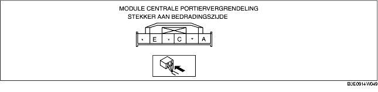

1. Meet de spanning of de doorverbinding overeenkomstig de tabel.
2. Ga storingzoeken aan de hand van het storingzoekschema [AFSTANDSBEDIENING] als alle onderdelen en de bijbehorende bedrading in orde zijn, maar het systeem nog steeds niet naar behoren functioneert.
